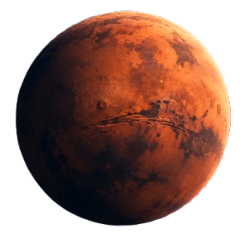

MOON MISSION
Build and survive a lunar mission.
BeginnerLearn real space engineering through mission decisions.
Build and survive a lunar mission.
Beginner
Manage a longer and more challenging mission.
IntermediateFrom training to debrief, experience the full cycle
of a real life space mission
Moon or Mars
Manage your
resources
Respond to
mission events
See why your
decision matters